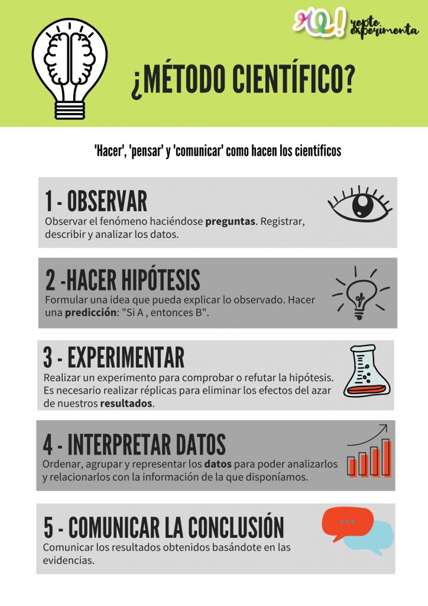

Gestión Eficiente de Proyectos
Trabajo en Equipo
La metodología del trabajo o gestiones de proyecto es la busqueda de empresas eficaces, eficientes, productivas. Actualmente existen múchos métodos que se pueden adaptar a cada equipo. y herramientas que ayudan a llevar a cabo la coordinación del proyecto más dinámico.
Mediante estas metologías se puede:
- Estandarizar el proceso: para garantizar un enfoque coherente y estructura.
- Mejora de Eficiencia: reduce errores y minimiza revisiones, ahorrando tiempo y recursos.
- Facilita la toma de decisiones: ayuda a gestores y miembros de equipo tomar decisiones informadas.
- Permite Adaptabilidad: pese a dar una estructura donde basarse, las metodologías de trabajo permite adaptar el plan de acción a cada proyecto.
Planificación
Establecer objetivos claros y alcanzables, definir el alcance del proyecto y crear un plan detallado con plazos y tareas específicas.
Hacer una lista de las tareas a realizar y asignar esa tarea a un miembro del equipo hace maravillas en la planificación y organización.
Comunicación
Fomentar una comunicación abierta y regular entre todos los miembros del equipo y las partes interesadas para asegurar que todos estén alineados y bien informados. Es un momento ideal para mejorar nuestras habilidades para comunicarnos con otros, negociar, ayudar, participar, empatizar con el equipo.
Monitoreo y Control
Realizar un seguimiento continuo del progreso del proyecto, ajustar los planes según sea necesario y resolver problemas a medida que surgen.
Uso de Herramientas
Utilizar herramientas de gestión de proyectos como Trello, Asana, Smartsheet de Google, Notion, Microsoft Project o hasta un grupo de Whatsapp sirven para organizar tareas, asignar responsabilidades y mantener el seguimiento de los avances.
Evaluación
Si las evaluaciones se hacen a lo largo del proyecto, en periodos para ir analizando como va el proyecto es mucho más fácil diagnosticar los errores y poder solucionarlos.
Después de completar el proyecto, evaluar el rendimiento del equipo y los resultados obtenidos para identificar áreas de mejora y lecciones aprendidas para futuros proyectos.
Metodo Scrum
Scrum es una metodología ágil de gestión de proyectos que se utiliza comúnmente en el desarrollo de software, pero también puede aplicarse a otros proyectos. Como por ejemplo, un trabajo integrador final sobre Biología.
1. Roles Principales
Scrum Master: Facilita el proceso y ayuda al equipo a seguir las prácticas Scrum.
Product Owner: Representa a los interesados y define los requerimientos del producto.
Equipo de Desarrollo: Los miembros que crean el producto.
2. Artefactos
Product Backlog: Lista priorizada de las funcionalidades y requisitos del producto.
Sprint Backlog: Tareas seleccionadas para completarse durante el sprint.
Incremento: La versión funcional del producto al final de cada sprint.
3. Eventos
Sprint: Periodo de tiempo (generalmente 2-4 semanas) para completar un conjunto de tareas.
Daily Stand-up: Reunión diaria para revisar el progreso y planificar el día.
Sprint Review: Reunión al final del sprint para mostrar el trabajo realizado.
Sprint Retrospective: Reunión para reflexionar sobre el sprint y mejorar el próximo.
Este es un video con distintos tipos de métodos que los puede ayudar a gestionar su trabajo integrador

Para no olvidar que estamos en estudios biológicos, los trabajos prácticos los vamos a hacer siguiendo el método científico
